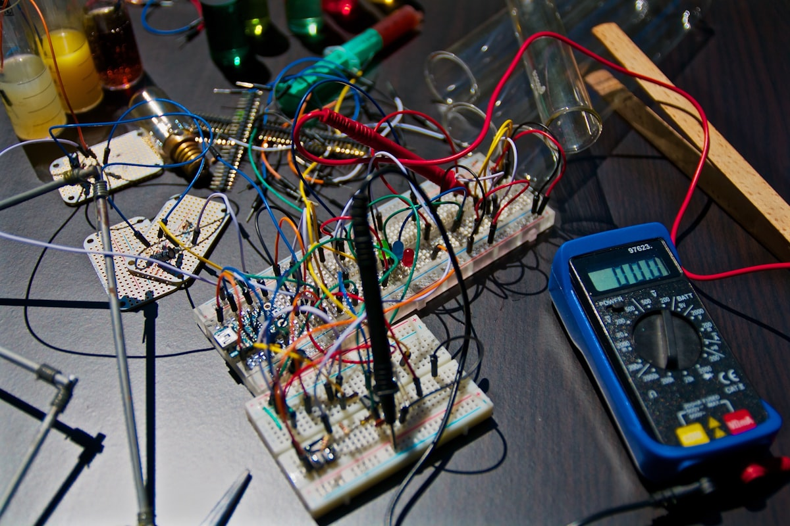

Diagnostic Circuit Testing
Rather than guessing which board or sensor has failed, our specialists measure direct resistance, voltage drop, and switch continuity against manufacturer specifications.
“We believe home appliances deserve honest diagnostics before costly replacements. When a household appliance stops working, families need clear answers, itemized estimates, and certified hands—not guesswork.”— Fixora Engineering & Operations Team
Home appliances shouldn't cause dread when they break down. We replaced vague four-hour arrival windows and surprise invoices with clear diagnostics and accountable service.
Every Fixora technician is background-checked, certified on major appliance brands, and equipped with precision electronic testing tools to isolate problems quickly. We explain what failed, why it failed, and what options you have before touching a single screw.
We test electrical circuits, sensors, and mechanical assemblies systematically to prevent unnecessary component swaps.
Rather than guessing which board or sensor has failed, our specialists measure direct resistance, voltage drop, and switch continuity against manufacturer specifications.

Every replacement component is sourced directly from OEM distributors, ensuring factory tolerances, energy efficiency, and electrical compatibility with your specific model.
Core standards followed by every technician, dispatcher, and support team member.
We demonstrate the exact faulty component and test readings to you before requesting approval for repairs.
Every estimate cleanly separates diagnostic inspection, approved labor, and genuine OEM factory parts.
Protective floor runners, clean shoe covers, and sanitized work areas. Your kitchen and laundry remain spotless.
90-day parts and labor coverage logged directly into your customer portal with real technician notes.
We designed every customer touchpoint to feel respectful, prompt, and predictable.
Our technicians maintain brand-specific factory service manuals, proprietary diagnostic codes, and authorized OEM supply lines.
Certified local technicians available today. Book online in under two minutes with complete price transparency.